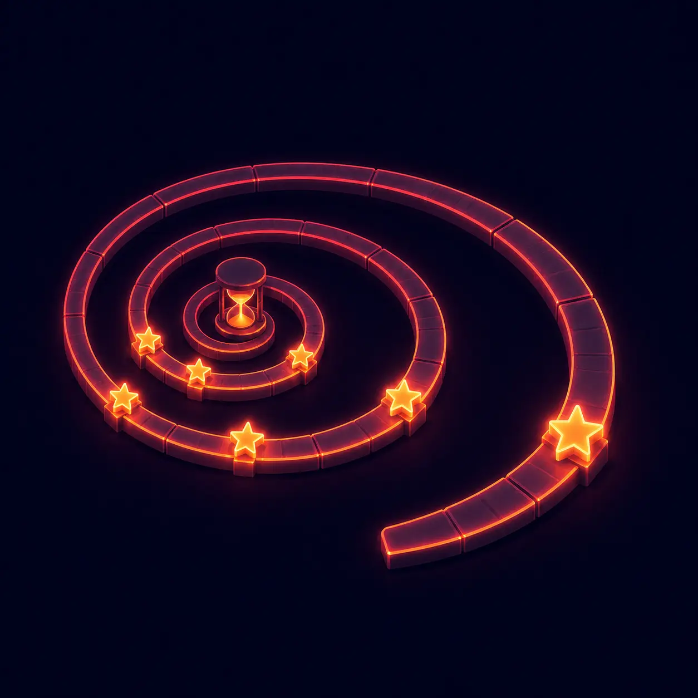
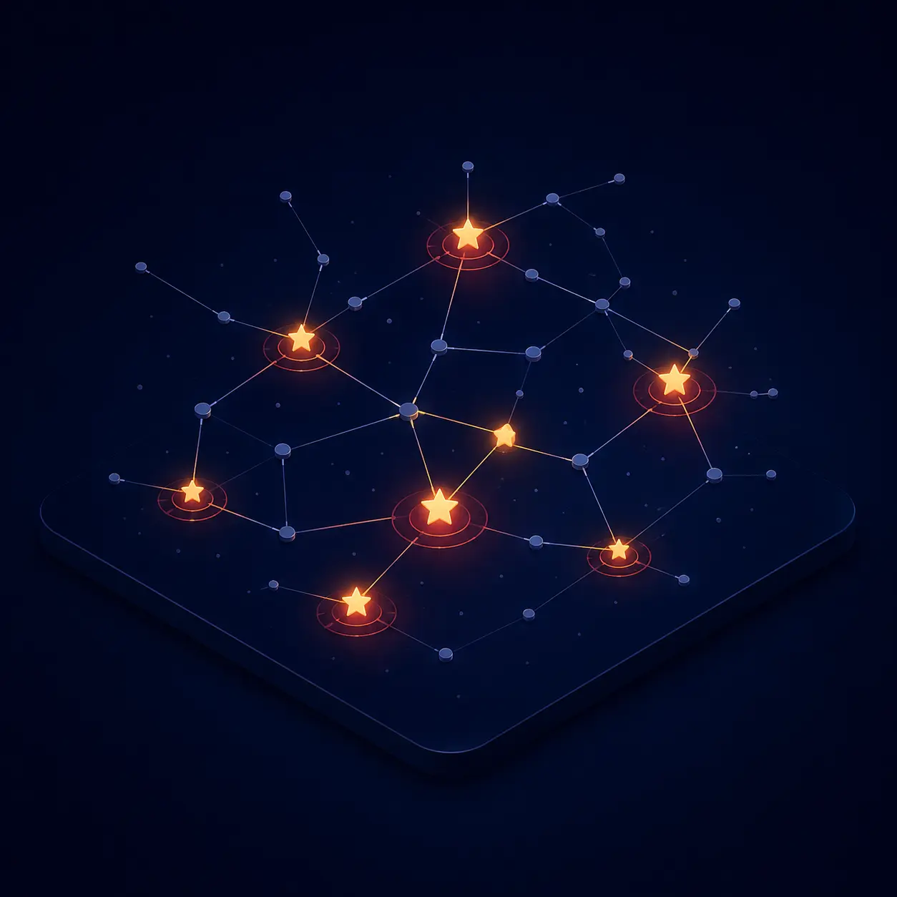
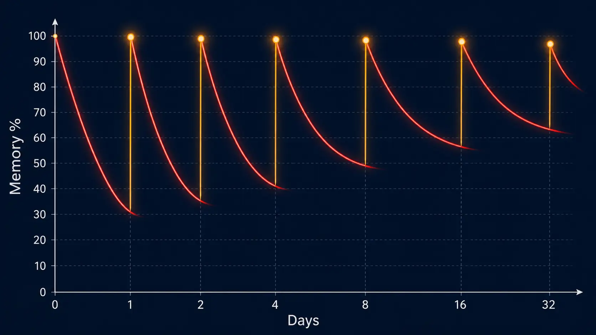
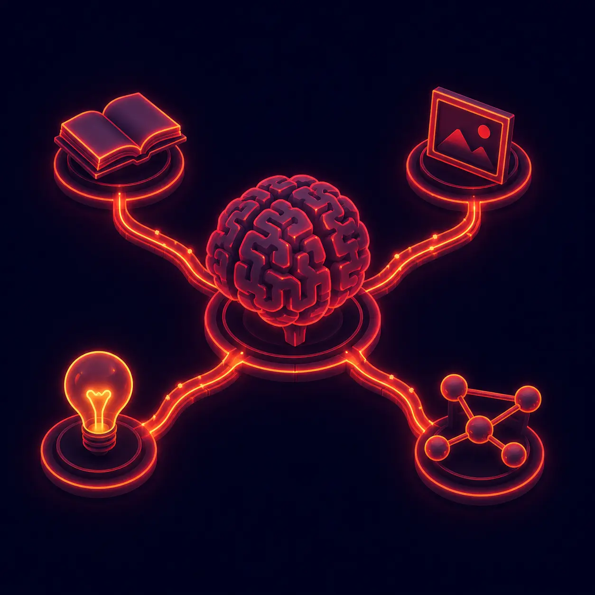

1885년 에빙하우스가 증명한 잔인한 사실.
5가지 시스템이 다 있어야 막을 수 있어요.
인지과학이 50년간 검증한 3가지가 없으면 막을 수 없어요.


검증된 기억 과학 5가지가 한 페이지에 동시에. 하나라도 빠지면 다음 날 다시 까먹어요.
다른 앱들은 1~2가지만 다룹니다. 5가지 다 동시에 작동해야 진짜 평생 기억으로 굳어요.
버튼 4개로 고민할 필요 없음 — 펼침 + 두 버튼이 전부.
홈에서 과목별 챕터 카드가 보입니다. 무료 챕터는 바로 시작, 유료 챕터는 결제 또는 포인트 사용. 각 챕터에 무료 미리보기가 있으니 결제 전에 강사 스타일을 먼저 확인하세요.
💡 한 페이지 = 한 단원. 화면 어디에도 광고·메뉴 없음.목차(예: "여행/교통")를 톡 누르면 카드들이 펼쳐집니다. 카드 톡 → 본문 공개. 학습할 때마다 목차 → 카드 → 목차로 돌아오니 구조가 머리에 자연스럽게 그려집니다.
💡 목차 옆 숫자는 그 안 카드 개수 — 학습 동기 부여.본문 보고 카드 하단의 두 버튼 중 하나:
간격 반복 시스템(SRS)을 가장 단순하게 구현 — 평가 버튼 4개 대신 2개, 망각 곡선을 거꾸로.

한 단어가 6단계까지 가는 데 약 두 달. 매일 자정이 지나면 다음 박스 카드들이 자동으로 오늘 학습으로 흘러내려와 그날 분량만 점검하면 됩니다.
독일 심리학자 에빙하우스의 망각 곡선을 거꾸로 이용한 학습 과학.
"막 외워서 잊을 때쯤" 한 번 더 보면 단기 기억이 장기 기억으로 변환됩니다.
자주 헷갈리는 카드는 ★이 누적. 따로 모아서 약점만 집중 학습.
평범한 단어장은 "★ 즐겨찾기"만 있어요. 우리는 자동 약점 추적 + 강도 시각화까지.
눈으로만 외우면 시험장에서 멍해져요. 입으로 답해야 진짜 회상 회로가 만들어집니다.
퀴즈는 SRS 박스를 변경하지 않고 단어-뜻 빠른 연결만 확인. 깊은 학습(박스 진급)은 정교화 모드가 별도 처리 — 둘이 동적으로 연동.
기억은 '본 횟수'가 아니라 '얼마나 깊이 처리했는지'로 결정됩니다. (Levels of Processing, Craik & Lockhart 1972)

얕은 처리(읽기)는 다음 날 잊혀요. 깊은 처리(의미 추출·연결·인출 단서)가 평생 기억을 만듭니다.
진짜로 외워지는 시스템 vs. "외운 척" 만 만들어주는 시스템.
| 비교 항목 | 일반 단어장 앱 |
Anki류 SRS 앱 |
원페이지 학습 |
|---|---|---|---|
| 학습 구조 | 무한 카드 스크롤 | 자기가 만든 덱 | 한 페이지 = 한 시험범위 |
| 외운 카드 관리 | 단순 ⭐ 즐겨찾기 | 간격 반복 (SRS) | 6박스 SRS + ★ 약점 자동 누적 (★ 1~5개 강도 시각화) |
| 정교화 (깊은 처리) | 없음 | 없음 | 🧠 정교화 모드 ✓ 블러+회상+자기평가 |
| 평가 방법 | "알아요/몰라요" 버튼 | "다시/어려움/ 괜찮음/쉬움" 4단계 버튼 |
오늘 / 내일 2버튼 직관 분류 ✨ + 정교화 깊은 처리 |
| 핸즈프리 학습 | 없음 | 없음 | 🎤 음성 퀴즈 ✓ 차·운동·집안일 중 |
| 단어 각인 효과 | 반복 노출만 | 간격 반복 | 📸 사진 스냅샷 색상+신호음+뜻 발음 |
| 콘텐츠 업데이트 | 앱 업데이트 기다림 | 덱 재다운로드 | 강사 수정 즉시 반영 |
| 설치·학습 난이도 | 설치 + 광고 + 회원가입 유도 |
학습 곡선이 가파름 (설정만 익히는 데 며칠) |
설치 불필요 1분이면 사용법 끝 |
| 시작 비용 | 무료(광고) / 버전업 1~3만원 |
무료지만 덱 만들기 부담 |
필요한 챕터만 골라서 |
SRS 학습 효과는 Anki와 동일합니다.
다른 점은 "펼쳐 봤는지" 만으로 자동 판정해서 4단계 평가의 피로감을 없앤 것.
한 페이지·실시간·진도까지 — 세 가지가 동시에.
모든 챕터를 강요하지 않습니다. 지금 필요한 단원만 골라 결제하세요.
현금 결제 외에 친구 추천으로 모은 포인트로도 챕터를 구독할 수 있습니다.
내 추천 링크로 가입한 친구가 첫 결제를 하면 — 친구와 나 모두 +1,000P
홈에서 💰 포인트 칩 클릭 → 챕터 선택 → 포인트 차감
이미 활성 챕터(D-12 같은 거)에 사용하면 잔여 + 30일로 연장
구매한 적 없거나 만료된 챕터는 포인트 사용 시점부터 30일
내 추천 링크로 가입하고 결제한 친구 1명당
나도 1,000P, 친구도 1,000P.
가입 없이 무료 챕터부터 둘러보세요. 마음에 들면 그때 결제하셔도 됩니다.
지금 시작하기 →